AIRATE UI KIT
Дизайн-система
AIRate.
Тёмная тема для сайта и кабинета. Цвет, типографика и компоненты на примере отчёта по упоминаниям.
КомпонентыЗнак «аирейт»
Для логотипа выбрали «Цитату». Она обозначает фрагмент ответа ИИ, где назван бренд.


01 · Цитата · выбранный знак
Фрагмент ответа, в котором ИИ назвал бренд.
16 px
02 · Упоминание
Одна строка выделена в тексте ответа.
16 px

03 · Эхо
Одно упоминание повторяется в разных ИИ-сервисах.
16 px
04 · Общий сигнал
Несколько ответов сходятся в один отчёт.
16 px
Цвет
Три уровня поверхности. Светлая кнопка выделяет основное действие, лавандовый отмечает бренд и ключевую серию отчёта.
- Фон
#101012 · --bg - Панель
#18181B · --surface - Поднятая панель
#222226 · --raised - Разделитель
#333337 · --line - Граница поля
#72727A · --line-control - Основной текст
#F7F4EF · --text - Вторичный текст
#A4A2A9 · --muted - Фирменный акцент
#B6A8FF · --accent - Успех
#2BC180 · --ok - Требует внимания
#DEA021 · --warning - Ошибка
#FF5965 · --danger - Информация
#7394FB · --info
Типографика
Onest для интерфейса и заголовков. Моноширинный шрифт для имён токенов и кода.
DISPLAY / 64Упоминания в ИИH1 / 48Отчёт по брендуH2 / 32Источники ответовH3 / 20Последний сканBODY / 16Сравните долю ответов с упоминанием за неделю.SMALL / 14В отчёт вошли 303 запроса.META / 1212–18.11.2026Сетка и интервалы
Поля от 48 px на десктопе, 24 px между колонками. На 1440 px рабочая ширина 1280 px.
12 колонок · 1280 px · шаг 24 px
4 px8 px12 px16 px24 px32 px48 px64 px96 px
Компоненты
Кнопки, поля и подсказки для главной, входа и 404. Базовая высота 44 px, в плотных панелях 36 px.
Кнопки
Поля
Статусы
- Готово
- В очереди
- Проверка прервана
- Ошибка
Проверка прервана
Часть ответов уже в отчёте. Запустите проверку оставшихся запросов.
Данные
Таблица с явными статусами. Цвет серии помогает читать график, подпись объясняет показатель.
| Запрос | Сервис | Упоминание | Статус |
|---|---|---|---|
| Сервисы мониторинга бренда | ChatGPT | Есть | Готово |
| Как отслеживать ответы ИИ | Perplexity | Нет | Готово |
| Инструменты для SEO-агентств | Google AI Overview | Ожидается | В очереди |
Lottie главной
Текущая анимация сканирования. При редизайне сохраняем композицию, движение и тайминги. Можно изменить акцентные цвета.